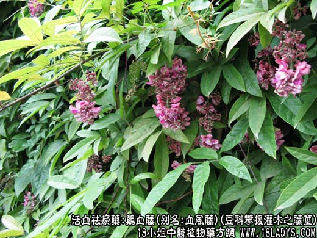

原文出处:本文转载自中药大全网。
原文连接:https://www.daquan.com/post/2004.html
原文连接:https://www.daquan.com/post/2004.html
鸡血藤(豆科攀援灌木之藤茎)，鸡血藤别名：血风藤、马鹿藤、紫梗藤、猪血藤、九层风、活血藤、大血藤、血风、血龙藤、过岗龙、五层血，为豆科攀援灌木植物密花豆的藤茎。下面我们来了解下鸡血藤的功效与作用。


鸡血藤的功效与作用
鸡血藤寄生、苦、甘温、归心、脾、肝经。
1、活血补血：用于血滞或兼血虚的经闭、月经后期，痛经等症。常与当归，熟地，川芎等配伍。
2、养血通络：用于肢体麻木、瘫痪、腰膝酸痛、风湿痹痛等。桑寄生，怀牛膝，防己等配伍。
3、健脾温肾：用于脾胃虚弱，肾虚等症状。
4、祛风通络：用于风湿，风湿麻痹等。
5、强筋壮骨：用于四肢乏力，骨质酥软等。
【药物形态】
本品为椭圆形、长矩图形或不规则的斜切片，厚0.3～lcm。栓皮灰棕色，有的可见灰白色斑，栓皮脱落处显红棕色。质坚硬。切面木部红棕色或棕色，导管孔多数;韧皮部有树脂状分泌物呈红棕色至黑棕色，与木部相间排列呈数个同心性椭圆形环或偏心性半圆形环;髓部偏向一侧。气微，味涩。
【药效鉴别】鸡血藤补血之功比丹参强，活血作用相仿，但无清热凉血之效。
【药理作用】1.煎剂可使血球细胞数和血红蛋白明显增高。2.有降血压作用。
【化学成分】含鸡血藤醇、铁质、豆甾醇等成分。
【用量用法】10——30g，水煎服，或入剂。外用适量。
结语：鸡血藤的功效与作用有很多，它既可以健脾温肾，又可以祛风通络，还具有强筋健骨的作用，希望对大家有所帮助
了解更多关于鸡血藤的功效与作用及图片，为您推荐如下内容↓↓↓↓